Всемогущая функция Query — подробное руководство
Думаю, все слышали о правиле Парето. В любой сфере 20% усилий дают 80% результата. Например, 20% своего гардероба вы носите 80% времени, 20% ваших клиентов приносят 80% дохода. Так же и в Google Таблицах: зная 20% существующих функций, вы сможете решить 80% всех возможных задач. Я считаю Query одной из наиболее полезных функций Google Таблиц. Но в справкеGoogle она описывается очень поверхностно, и вся мощь данной функции не раскрыта. При более детальном знакомстве становится ясно, что она способна заменить большую часть существующих функций.

Для работы с QUERY вам понадобятся базовые знания SQL. Для тех, кто не в курсе: пугаться не надо, функция QUERY на самом деле поддерживает самые простые возможности SQL.
Синтаксис QUERY
QUERY(данные; запрос; [заголовки])
Где:
- данные — это диапазон ячеек, который будет служить базой данных для SQL запроса;
- запрос — текст SQL запроса;
- заголовки — необязательный аргумент, в котором вы можете указать, сколько первых строк массива содержат заголовки.
Для максимального восприятия дальнейшей информации предлагаю открыть и скопировать себе следующую Google Таблицу. Для того, чтобы создать копию, воспользуйтесь меню «Файл» и выберите в нем пункт «Создать копию».

В доксе, копию которого вы только что создали, существует несколько листов. Лист DB является базой данных, к которой мы будет обращаться с помощью функции QUERY. Листы Level содержат примеры, которые мы будем рассматривать в этой статье. C каждым новым уровнем пример будет усложняться.
План SQL запроса в функции Query
Любой SQL запрос состоит из отдельных блоков, которые часто называют кляузами. В SQL для функции Query заложен синтаксис языка запросов API визуализации Google, который поддерживает следующие кляузы:
- select — перечисление полей, которые будут возвращены запросом;
- where — содержит перечень условий, с помощью которых будет отфильтрован массив данных, обрабатываемый запросом;
- group by — содержит перечень полей, по которым вы хотите группировать результат;
- pivot — помогает строить перекрестные таблицы, используя значение одного столбца в качестве названий столбцов финальной таблицы;
- order by — отвечает за сортировку результатов;
- limit — с помощью этой части запроса вы можете задать предел количеству строк, возвращаемых запросом;
- offset — с помощью этой кляузы вы можете задать число первых строк, которые не надо обрабатывать запросом;
- label — данная кляуза отвечает за название полей, возвращаемых запросом;
- format — отвечает за формат выводимых данных;
- options — дает возможность задавать дополнительные параметры вывода данных.
Hello World для функции Query (Select)
Перейдем на лист Level_1 и посмотрим формулу в ячейке A1.
=query(DB!A1:L1143;"select * limit 100")
Часть формулы «DB!A1:L1143» отвечает за базу данных, с которой мы будем делать выборку. Вторая часть «select * limit 100» содержит непосредственно текст запроса. Символ «*» в данном случае означает возвращение всех полей, содержащихся в базе данных. С помощью «limit 100» мы ограничиваем вывод данных в 100 строк максимум. Это пример самого простого запроса. Мы выбрали 100 первых строк из базы данных. Это своего рода «Hello world» для функции Query.
Используем фильтры и сортировку (Where, Order by)
Переходим на лист Level_2. Выберем только некоторые нужные нам поля и зададим условия фильтрации и сортировки. Например, используем данные только по кампаниям Campaign_1 и Campaign_2 за период 22-25 октября 2015 года. Отсортируем их в порядке убывания по сумме сеансов. Для фильтра и сортировки в текст запроса необходимо добавить описание кляуз Where и Order. Для вывода в результирующую таблицу описанного выше примера нам понадобятся поля Campaign, Date и Sessions. Именно их и нужно перечислить в кляузе Select.
Обращение к полям базы данных осуществляется через названия столбцов рабочего листа, на котором располагается база данных.
В нашем случае данные, расположенные на листе DB, и обращение к определенным полям прописываются как название столбцов листа. Таким образом, нужные поля располагается в следующих столбцах:
- поле Date — столбец A;
- поле Campaign — столбец B;
- поле Sessions — столбец G.
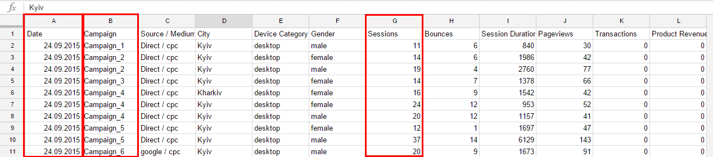
Соответственно, часть запроса, отвечающая за перечень выводимых в результате данных, будет выглядеть так:
Select A, B, G
Далее в запросе идет кляуза Where. При написании запроса кляузы обязательно должны располагаться в таком порядке, в котором были описаны в первом разделе этой статьи. После объявления Whereнам необходимо перечислить условия фильтрации. В данном случае мы фильтруем данные по названию кампании (Campaign) и дате (Date). Мы используем несколько условий фильтрации. В тексте запроса между всеми условиями должен стоять логический оператор OR или AND. Фильтрация по датам немного отличается от фильтрации по числовым и текстовым значениям, для ее применения необходимо использовать оператор Date. Часть запроса, отвечающая за фильтрацию данных, будет выглядеть так:
WHERE
(A >= date'2015-10-22'
AND A <= date'2015-10-25')
AND (B = 'Campaign_1'
OR B = 'Campaign_2')
Мы разбили с помощью скобок фильтрацию данных на две логических части: первая фильтрует по датам, вторая — по названию кампании. На данном этапе формула, описывающая данные, которые необходимо выбрать, и условия фильтрации данных, выглядит так:
=query(DB!A1:L1143;"
Select A, B, G
WHERE
(A >= date'2015-10-22'
AND A <= date'2015-10-25')
AND (B = 'Campaign_1'
OR B = 'Campaign_2')")
Вы можете скопировать ее и вставить, например, на новый лист документа, который используется в качестве примера в этом посте, и получите следующий результат:
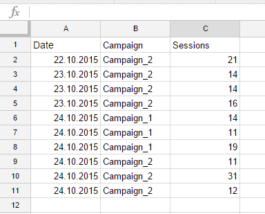
Помимо обычных логических операторов (=, <, >) блок WHERE поддерживает дополнительные операторы фильтрации:
- contains — проверяет содержание определённых символов в строке. Например, WHERE A contains ‘John’ вернёт в фильтр все значения из столбца A, в которых встречается John, например, John Adams, Long John Silver;
- starts with — фильтрует значения по префиксу, то есть проверяет символы в начале строки. Например, starts with ‘en’ вернёт значения engineering и english;
- ends with — фильтрует значения по окончанию строки. Например, строка ‘cowboy’ будет возвращена конструкцией «ends with ‘boy’» или «ends with ‘y’»;
- matches — соответствует регулярному выражению. Например: where matches ‘.*ia’ вернёт значения India и Nigeria.
- like —упрощённая версия регулярных выражений, проверяет соответствия строки заданному выражению с использованиям символов подстановки. На данный момент like поддерживает два символа подстановки: «%» означает любое количество любых символов в строке, и «_» — означает один любой символ. Например, «where name like ‘fre%’» будет соответствовать строкам ‘fre’, ‘fred’, и ‘freddy’.
Запрос уже отфильтровал данные за определенный период и оставил только нужные нам кампании. Остается только отсортировать результат по убыванию в зависимости от количества сеансов. Сортировка в данных запросах осуществляется традиционно для SQL с помощью кляузы Order by. По синтаксису она довольна простая: необходимо только перечислить поля, по которым требуется отсортировать результат, а также указать порядок сортировки. По умолчанию — порядок asc, то есть по возрастанию. Если укажете после название поле параметр desc, запрос вернет результат в порядке убывания указанных в кляузе Order by полей.
В нашем случае за фильтрацию будет отвечать строчка в тексте запроса:
Order by G desc
Соответственно, окончательный результат формулы на листе Level_2, решающий нужную нам задачу, выглядит так:
=query(DB!A1:L1143;"
SELECT A, B, G
WHERE (A >= date'2015-10-22'
AND A <= date'2015-10-25')
AND (B = 'Campaign_1'
OR B = 'Campaign_2')
ORDER BY G DESC")
Теперь вы умеете с помощью простейшего SQL синтаксиса и функции QUERY фильтровать и сортировать данные.
Агрегирующие функции, группировка данных и переименование столбцов (Group by, Label)
Переходим на лист Level_3 и усложняем задачу. В запросах вы можете не только делать выборки, но также проводить различные вычисления и агрегации данных. Для этого в SQL функции Query существует ряд агрегирующих функций и кляуза Group by. Агрегирующие функции:
| Функция | Описание | Поддерживаемый тип данных | Возвращаемый тип данных |
| avg() | Возвращает среднее значение для группы | Числовой | Числовой |
| count() | Возвращает количество значений в группе | Любой | Числовой |
| max() | Возвращает максимальное значение для группы | Любой | Аналогичный полю, к которому применяется |
| min() | Возвращает минимальное значение для группы | Любой | Аналогичный полю, к которому применяется |
| sum() | Возвращает сумму значений в группе | Числовой | Числовой |
Итак, давайте посчитаем данные по каждой кампании:
- среднесуточное количество сеансов;
- максимальное количество сеансов за сутки;
- минимальное количество сеансов за сутки;
- количество дней, когда по кампании был совершен хотя бы один сеанс;
- сумма всех сеансов по каждой кампании за весь период.
Для решения этой задачи нам понадобятся данные только из двух полей: Campaign (находится в столбце B) и Sessions (находится в столбце G). Все агрегирующие функции прописываются вместе со списком полей для вывода данных в кляузе Select. В случае применения агрегирующих функций все поля, к которым не применяется данный тип функций, являются группирующими полями. Их необходимо перечислить в кляузе Group by. Агрегирующие функции работают обязательно в паре с Group by. Описание кляузы Select будет следующим:
SELECT
B,
avg(G),
max(G),
min(G),
count(G),
sum(G)
Далее необходимо сгруппировать данные: в нашем случае требуется группировка только по одному полю Campaign, но вы можете осуществлять группировку по любому количеству столбцов. Описание кляузы Group by очень простое:
GROUP BY B
В кляузе достаточно указать только столбец B, содержащий информацию о названии кампании. Потому что он единственный, к которому мы не применили никакой агрегирующей функции. Наша формула:
=query(DB!A1:L1143;"
SELECT
B,
avg(G),
max(G),
min(G),
count(G),
sum(G)
GROUP BY B")
Получим следующий результат:
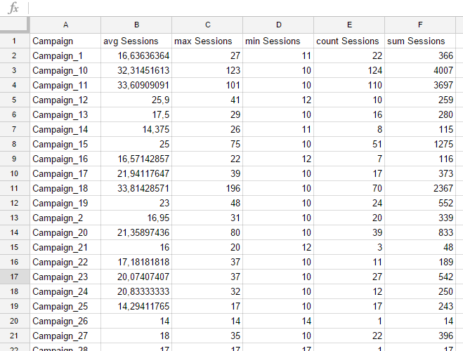
В принципе, мы получили желаемый результат, но названия столбцов можно подкорректировать с помощью кляузы Label. Результат будет лучше отображаться, если мы отсортируем отчет по названию кампании. Описание кляузы Order by мы уже рассмотрели выше.
Для нужной сортировки достаточно добавить следующую строку после описания:
Order by B
Чтобы переименовать столбцы в таблице, которую возвращает запрос, необходимо добавить описание кляузы Label. Синтаксис достаточно прост: сначала указываете выводимый столбец или функцию, которая будет возвращать значения в результирующую таблицу, и далее в одинарных кавычках указываете нужное название.
Это будет выглядеть так:
B 'Кампания',
avg(G) 'Среднее',
max(G) 'Максимальное',
min(G) 'Минимальное',
count(G) 'Количество',
sum(G) 'Общая сумма'
Преобразованная формула:
=query(DB!A1:L1143;"
SELECT
B,
avg(G),
max(G),
min(G),
count(G),
sum(G)
GROUP BY B
ORDER BY B
LABEL
B 'Кампания',
avg(G) 'Среднее',
max(G) 'Максимальное',
min(G) 'Минимальное',
count(G) 'Количество',
sum(G) 'Общая сумма'")
А результат, возвращаемый формулой, выглядит так:
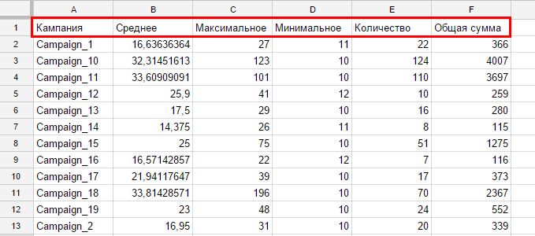
Все поля названы соответствующим описанию кляузы Label образом. Последнее, что режет глаз в возвращаемой таблице, — формат, в котором выводятся данные в столбце «Среднее». Для корректировки форматов, выводимых запросом данных, требуется описать кляузу Format. Ее описание схоже с описанием Label, но вместо названия поля следует прописать маску вывода данных (также в одинарных кавычках).
Округлим числа в столбце «Среднее» до двух знаков после запятой. Для округления выводимых данных до двух знаков после запятой маска должна выглядеть как ‘0.00’.
Описание кляузы Format
FORMAT avg(G) ‘0.00’
Соответственно, окончательная формула на листе Level_3 выглядит так:
=query(DB!A1:L1143;
"SELECT
B,
avg(G),
max(G),
min(G),
count(G),
sum(G)
GROUP BY B
ORDER BY B
LABEL
B 'Кампания',
avg(G) 'Среднее',
max(G) 'Максимальное',
min(G) 'Минимальное',
count(G) 'Количество',
sum(G) 'Общая сумма'
FORMAT
avg(G) '0.00'")
В результате:
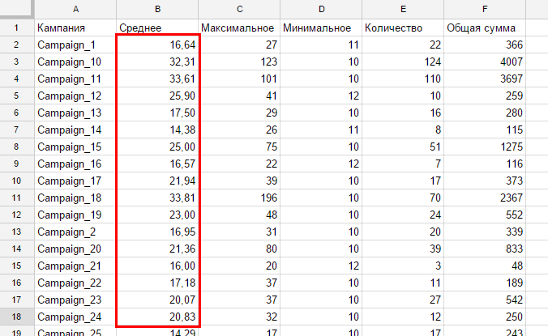
Создание перекрестных таблиц (Pivot, скалярные функции)
Чтобы за считанные секунды с помощью функции QUERY создать перекрестную таблицу, следует добавить в запрос описание кляузы Pivot. Построим отчет, в котором в строках будет номер дня недели, в столбцах — тип устройства, а в качестве выводимых значений рассчитаем показатель отказов. Если вы внимательно изучили структуру базы данных, находящейся на листе DB, то наверняка заметили, что у нас нет поля, содержащего информацию о дне недели, как и поля, содержащего информацию о показателе отказов.
Чтобы вычислить день недели, придется воспользоваться одной из множества скалярных функций. В нашей базе есть вся необходимая информация для расчета показателя отказов. Дальше достаточно просто применить арифметический оператор «Деление».
Скалярные функции
На момент написания статьи SQL в Google Таблицах поддерживает 14 скалярных функций.
| Функция | Описание |
|---|---|
| --- | --- |
| year() | Возвращает номер года из «даты» или «даты и времени». Пример: year(date ‘2009-02-05’) вернет 2009. Запрашиваемые параметры: один параметр с типом дата или дата и время. Тип возвращаемых данных: число. |
| month() | Возвращает номер месяца из «даты» или «даты и времени». Но в данном случае январь будет возвращать 0, феврваль 1 и так далее. Началом отсчета для номера месяца является 0. Пример: month(date ‘2009-02-05’) вернет 1. Чтобы функция вернула номер месяца в привычном виде к ее результату прибавьте 1, month(date “2009-02-05”)+1 вернет 2. Запрашиваемые параметры: один параметр с типом дата или дата и время. Тип возвращаемых данных: число. |
| day() | Возвращает номер дня в месяце из «даты» или «даты и времени». Пример:day(date ‘2009-02-05’) вернет 5. Запрашиваемые параметры: один параметр с типом дата или дата и время. Тип возвращаемых данных: число. |
| hour() | Возвращает номер часа в дне из «даты и времени» или «времени». Пример:hour(timeofday ‘12:03:17′) вернет 12. Запрашиваемые параметры: один параметр с типом время или дата и время. Тип возвращаемых данных: число. |
| minute() | Возвращает номер минуты в часе из «даты и времени» или «времени». Пример:minute(timeofday ‘12:03:17′) вернет 3. Запрашиваемые параметры: один параметр с типом время или дата и время. Тип возвращаемых данных: число. |
| second() | Возвращает номер секунды в минуте из «даты и времени» или «времени». Пример:second(timeofday ‘12:03:17′) вернет 17. Запрашиваемые параметры: один параметр с типом время или дата и время. Тип возвращаемых данных: число. |
| millisecond() | Возвращает номер миллисекунды в секунде из «даты и времени» или «времени». Пример:millisecond(timeofday ‘12:03:17.123′) вернет 123. Запрашиваемые параметры: один параметр с типом время или дата и время. Тип возвращаемых данных: число. |
| quarter() | Возвращает номер квартала в году из «даты и времени» или «времени». Базовым значением или началом отсчета является 1, соответствено, для первого квартала функция вернет значение 1, для второго 2 и так далее. Пример:quarter(date ‘2009-02-05’) вернет 1. Запрашиваемые параметры: один параметр с типом дата или дата и время. Тип возвращаемых данных: число. |
| dayOfWeek() | Возвращает номер дня недели в неделе из «даты» или «даты и времени». Началом недели считается воскресенье, для воскресенья функция вернет значение 1, для понедельника 2 и так далее. Пример:dayOfWeek(date ‘2015-11-10’) вернет 3, так как 10 ноября 2015 года является вторником. Запрашиваемые параметры: один параметр с типом дата или дата и время. Тип возвращаемых данных:число. |
| now() | Возвращает текущую дату и время в часовом поясе GTM. Запрашиваемые параметры: не требует ввода параметров. Тип возвращаемых данных: дата и время. |
| dateDiff() | Возвращает разницу в днях между двумя датами. Пример:dateDiff(date ‘2008-03-13’ , date ‘2008-02-12’) вернет 29, так как 10 ноября 2015 года является вторником. Запрашиваемые параметры: два параметра с типом «дата» или «дата и время». Тип возвращаемых данных: число. |
| toDate | Возвращает преобразованное в дату значение из «даты» или «даты и времени» или «числа». Пример: - toDate(date ‘2008-03-13’) вернет аналогичное значение в формате даты, ‘2008-03-13’. - toDate(dateTime‘2013-03-13 11:19:22’) вернет дату ‘2013-03-13’. - toDate(1234567890000) вернет дату ‘2009-02-13’. Запрашиваемые параметры: один параметр с типом дата, дата и время или число. Тип возвращаемых данных: дата. |
| upper() | Преобразует все значения в строке в верхний регистр. Пример: upper( ‘foo’) вернет строку ‘FOO’. Запрашиваемые параметры: один параметр с текстовым типом данных. Тип возвращаемых данных: текст. |
| lower() | Преобразует все значения в строке в нижний регистр. Пример: upper( ‘Bar’) вернет строку ‘bar’. Запрашиваемые параметры: один параметр с текстовым типом данных. Тип возвращаемых данных: текст. |
Арифметические операторы
| Оператор | Описание |
| + | Сложение нескольких числовых значений |
| – | Разница между числовыми значениями |
| / | Деление числовых значений |
| * | Умножение числовых значений |
Для решения нашей задачи потребуется использовать скалярную функцию dayOfWeek для вычисления дня недели, а также арифметический оператор «/» для подсчета показателя отказов.
Давайте определим поля, которые будем использовать в запросе:
- Для вычисления дня недели нам потребуется данные поля Date в столбце A.
- Данные о типах устройств хранятся в поле Device category в столбце E.
- Для расчета показателя отказов потребуются данные полей Bounces и Sessions — в столбцах H и G.
Опишем кляузу Select для нашего запроса. Поскольку в строках у нас будут данные по дням недели, нам достаточно прописать скалярную функцию, которая будет вычислять день недели, а также формулу вычисления показателя отказов.
SELECT dayOfWeek(A), sum(H)/sum(G)
Именно так будет выглядеть описание нужных нам полей. Теперь с помощью кляузы Group by сгруппируем строки по дням недели. Для этого допишем в запрос следующую строку:
GROUP BY dayOfWeek(A)
Уже видно, как меняется показатель отказов в зависимости от дня недели:
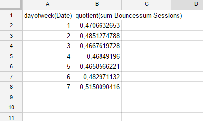
Чтобы построить перекрестную таблицу, достаточно прописать кляузу Pivot с указанием столбца, значения из которого будут добавлены в виде столбцов. В нашем случае это столбец E, потому что именно он содержит информацию о типе устройств. Дописываем строку:
PIVOT E
Теперь запрос возвращает результат:
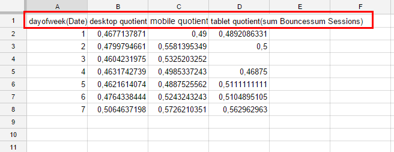
Нам остается только добавить последние штрихи: изменить названия столбцов и формат чисел с помощью пунктов LABEL и FORMAT.
Окончательная формула на листе Level_4:
=query(DB!A1:L1143;"
SELECT dayOfWeek(A), sum(H)/sum(G)
GROUP BY dayOfWeek(A)
PIVOT E
LABEL
dayOfWeek(A) 'День недели',
sum(H)/sum(G)''
FORMAT sum(H)/sum(G) '0.00%'")
Получаем отчет:
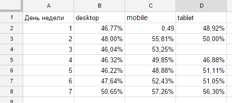
Строкой LABEL sum(H)/sum(G) ‘’ мы убрали из подписей столбца надпись, содержащую формулу расчета. Строкой FORMAT sum(H)/sum(G) ‘0.00%’ мы передали процентный формат показателю отказов в отчете. В целом, описанного в примерах выше синтаксиса вполне достаточно, чтобы начать активно использовать функцию QUERY, но в завершении статьи хочу показать еще несколько интересных приемов, которые можно взять на вооружение.
Импорт данных с помощью QUERY из другой Google Таблицы
С помощью QUERY вы можете использовать в качестве базы данных другую Google Таблицу. Это можно сделать с помощью сочетания функций ImportRange и QUERY. Я создал новую Google Таблицу, в которую продублировал данные с листа DB из приведенного в начале статьи документа. Чтобы в качестве базы данных использовать данные из другой Google таблицы, в качестве первого аргумента функции Query выступит импортируемый функцией ImportRange диапазон.
Разница в том, что при написании запроса к данным, импортируемым функцией ImportRange, вместо названия столбцов мы указываем их порядковый номер в возвращаемом функцией ImportRange диапазоне. На листе DataImport перепишем запрос, представленный в Level_4 таким образом, чтобы он обращался к данным, находящимся в новой таблице на листе DB_Transfer. Синтаксис функции ImportRange достаточно прост:
IMPORTRANGE(ключ, диапазон)
Где ключ — часть URL Google Таблицы:
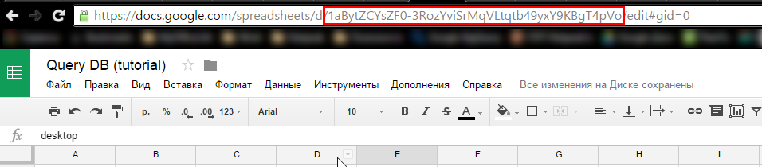
А диапазон — это ссылка на лист и (простите за каламбур) диапазон. В нашем случае диапазоном будет DB_Transfer!A1:L1143. Формула ImportRange:
importrange(“1aBytZCYsZF0-3RozYviSrMqVLtqtb49yxY9KBgT4pVo”;”DB_Transfer!A1:L1143”)
Именно ее мы должны указать в качестве данных функции Query. Далее остается переписать запрос так, чтобы ссылаться на столбцы базы данных не по названию, а по порядковому номеру столбца. Определим, к каким столбцам мы обращались с помощью запроса на листе Level_4.
| Название | Содержание | Наименование в таблице | Порядковый номер |
| Date | Дата | A | 1 |
| Device type | Тип устройства | E | 5 |
| Sessions | Количество сеансов | G | 7 |
| Bounces | Количество отказов | H | 8 |
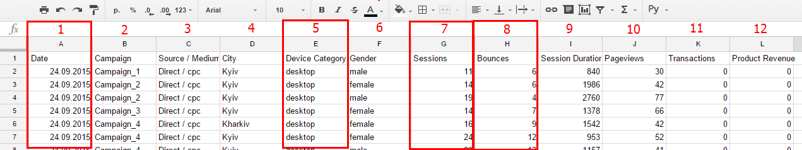
Текст запроса после замены названий столбцов на их порядковый номер:
SELECT dayOfWeek(Col1), sum(Col8)/sum(Col7)
GROUP BY dayOfWeek(Col1)
PIVOT Col5
LABEL
dayOfWeek(Col1) 'День недели',
sum(Col8)/sum(Col7) ''
FORMAT sum(Col8)/sum(Col7) '0.00%'
Как видите, текст запроса практически не изменился, но вместо столбца A мы теперь указываем Col1, вместо столбца E — Col5, вместо G — Col7 и вместо H, соответственно, Col8. Получаем формулу:
=query(IMPORTRANGE("1aBytZCYsZF0-3RozYviSrMqVLtqtb49yxY9KBgT4pVo";"DB_Transfer!A1:L1143");"
SELECT dayOfWeek(Col1), sum(Col8)/sum(Col7)
GROUP BY dayOfWeek(Col1)
PIVOT Col5
LABEL
dayOfWeek(Col1) 'День недели',
sum(Col8)/sum(Col7) ''
FORMAT sum(Col8)/sum(Col7) '0.00%'")
В качестве первого аргумента функции Query выступает функция ImportRange с ссылкой на ключ нужной Google таблицы, которую вы можете скопировать из URL Google Таблицы, и ссылки на диапазон, включающий название листа, а также первой и последней ячейки нужного диапазона.
Номера столбцов в запросе идут не со столбца A, а с того, который является первым в указанном вами диапазоне в функции ImportRange. Например, если бы в качестве импортируемого диапазона выступал DB_Transfer!C1:L1143, то данные из столбца C запрашивались ссылкой Col1, поскольку в импортируемом массиве этот столбец является первым.
Окончательную формулу в работе вы можете посмотреть на листе DataImport.
Строим запрос на основе объединения данных из нескольких таблиц с одинаковой структурой
Ещё одна довольно мощная возможность функции QUERY — построение запрос на основе нескольких массивов данных.
Единственным условием для объединения данных является одинаковая структура входящих таблиц.
Принцип объединения входящих данных заключается в том, что первый аргумент функции QUERY на вход может принимать либо ссылку на диапазон либо описание массива.
Массив — это виртуальная таблица, которая содержит строки и столбцы.
Массив всегда описывается внутри фигурных скобок, при этом необходимо соблюдать следующую пунктуацию:
- обратная косая черта «/» — разделяет столбцы. Например, {1 / A}. Число 1 будет находится в правой левой ячейке массива, буква «A» в ячейке справа. Так мы описали диапазон, содержащий два столбца и одну строку.
- точка с запятой «;» используется для перехода на следующую строку. Возьмем {1;A}. Этот массив будет состоять из одного столбца и двух строк, в первой строке будет содержаться значение 1, во второй строке буква «A».
Таким образом вы можете два и более диапазона описать в одном массиве, например:
=query({Table1!A1:B5; Table2!A1:B5; Table3!A1:B5};"SELECT * WHERE Col2 > 4")
В данном случае мы обращаемся с запросом к трём диапазонам данных, находящимся на разных листах, объединив их с помощью «;» в массив так, что вторая таблица является продолжением первой, а третья таблица — продолжением второй.
Посмотрите этот пример по ссылке.
Запрос с динамическими параметрами
Синтаксис запросов в функции QUERY сложен для неподготовленного пользователя. Поэтому вы можете добавить на рабочий лист различные интерактивные элементы в виде выпадающего списка, созданного с помощью функции «Проверка данных».
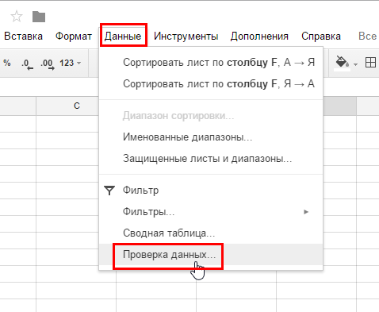
А в тексте запроса — делать ссылки на ячейки, содержащие нужные данные. Например, мы можем динамически задать диапазон дат, который хотим вывести в динамическую таблицу, либо сделать возможность динамически добавлять и убирать различные поля результирующей таблицы. Посмотреть, как это выглядит наглядно, вы можете на листе DinamicQuery.
Вы можете изменить все поля, закрашенные зеленым цветом, и таким образом выбрать интересующий диапазон дат, ввести удобные для вас название полей, а также обозначить, какие из пяти предложенных полей требуется вывести в отчет.
При использовании данного конструктора отчета для отображения обязательно должна быть выбрана хотя бы одна мера и одно измерение.
Укажите интересующий вас интервал дат в пределах от 24.09.2015 по 25.10.2015, поскольку данные, сгенерированные для тестовой базы и хранящиеся на листе DB, содержат только этот диапазон.
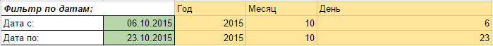
Далее в конструкторе отчетов вы можете изменить название полей и оно будет отображаться в финальной таблице. Также можете указать, какие поля требуется вывести в отчет. Еще раз напомню, что необходимо указать как минимум одну меру и одно измерение.
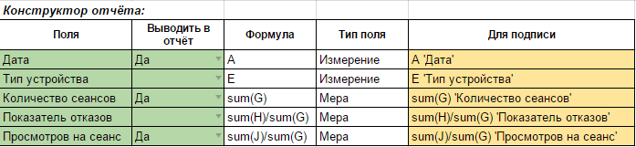
Во время изменения каких-либо параметров отчет под конструктором будет изменяться динамически.
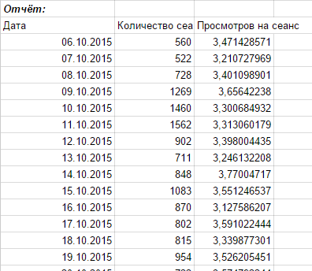
Формула, которая изменяет запрос в зависимости от настроенных параметров, выглядит так:
=query(DB!A1:L1143;"
Select "&join(",";filter(C7:C11;B7:B11="Да"))&"
WHERE
(A >= date'"&C2&"-"&D2&"-"&E2&"'
AND A <= date'"&C3&"-"&D3&"-"&E3&"')
GROUP BY "&join(",";filter(C7:C11;B7:B11="Да";D7:D11="Измерение"))&"
LABEL "&join(",";filter(E7:E11;B7:B11="Да")))
На самом деле функция Query может разрастаться до размеров программы и динамически изменять выводимую информацию в зависимости от указанных на рабочем листе данных.
Надеюсь, у меня получилось объяснить, как пользоваться одной из наиболее сложных и в тоже время полезных функций Google Таблиц.
Готов отвечать на вопросы в комментариях 🙂